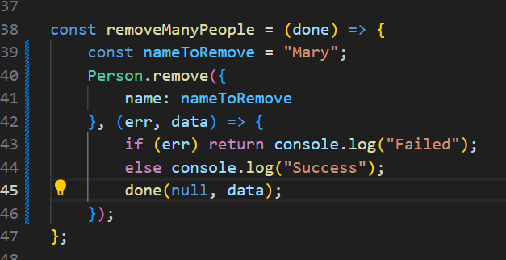

Remove all the objects with specific name from databse:

Query Chain,
This is the process of refinig the executing query before performing that on database first and then performing the actual query.
We have used .find() to find the matching objects in the database using vaouriteFoods. We needed all teh objects which has burrito as the fav.Food. so we get all teh documents.
Now, we want to make sure all of them are sorted based on the name; here 1 means ascending and -1 will mean descending. After sorting the docuemnts based on name, we limit the documents searched to only 2 docuements. After limiting we are saying select(). which means that which columns are we requesting? Here we said age:0 which means we want to hide age, where'as if we would have wanted to include it, we would have written something lie age:1.
At the end we are doing .exec() which is executing the query on the databse. Meaning first we built all the filters and then executed that query.